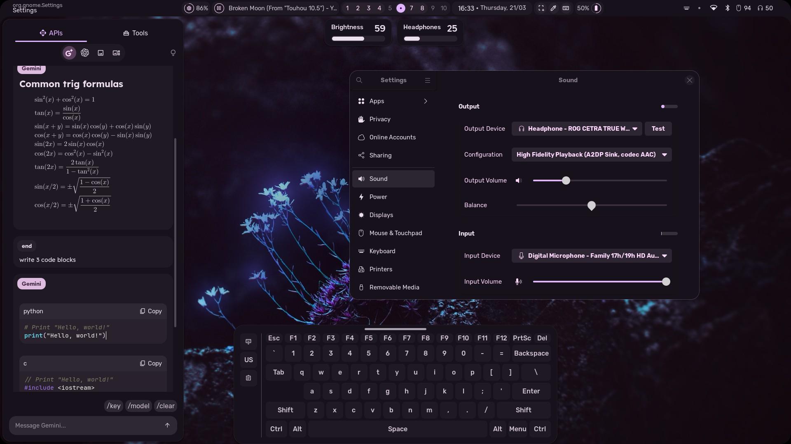

fufexan's setup - fufexan/dotfiles

End_4's setup - end-4/dots-hyprland
flickowoa's setup - flickowoa/dotfiles
notusknot's setup (Oud) - notusknot/dotfiles-nix

coffebar's setup - coffebar/dotfiles

Stephan Raabe's setup - mylinuxforwork/dotfiles